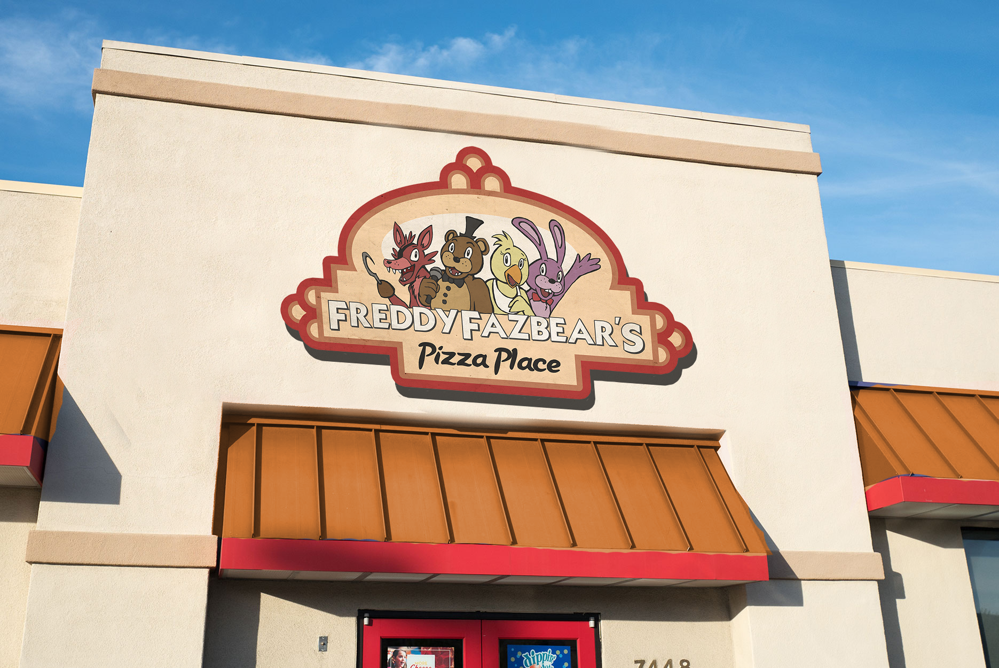

uni87 Archive: Photographs
Archived photographs (scanned from physical or digital) obtained from Universe 087's InterNet
1970-1979
| ID | Date (if applicable) | Source (if applicable) | Description | Link |
| PHT-87-N1MA | May 16, 1975 | Utah Division of Motor Vehicles | Henry J. Emily's driver license photo |

|
| PHT-87-nVIt | December 3, 1975 | Utah Division of Motor Vehicles | William E. Afton's driver license photo |

|
1980-1989
Index not found!
1990-1999
Index not found!
2000-2009
| ID | Date (if applicable) | Source (if applicable) | Description | Link |
| PHT-87-VJAK | Aprox. 2008 | 4chan |
A photo of an abandonned Freddy Fazbear's Pizza location in Hurricane, Utah |
 |
2010-2019
Index not found!
2020-2029
Index not found!
2030-2040
Index not found!